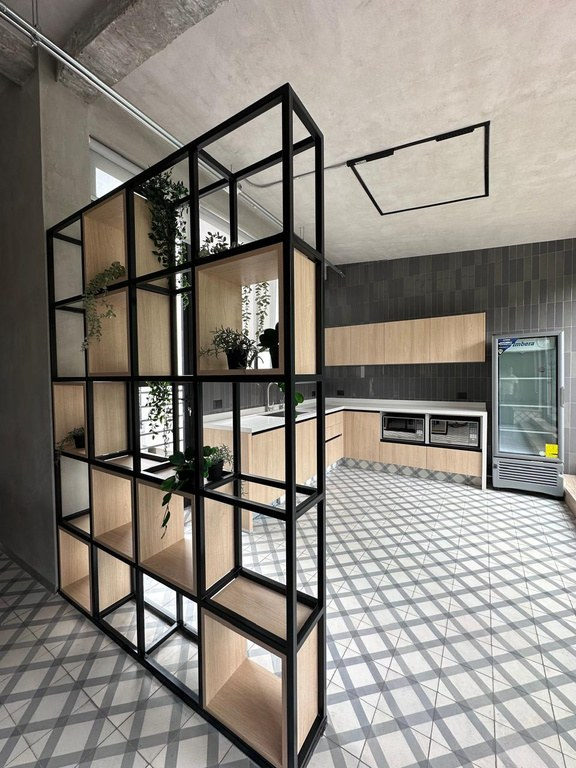
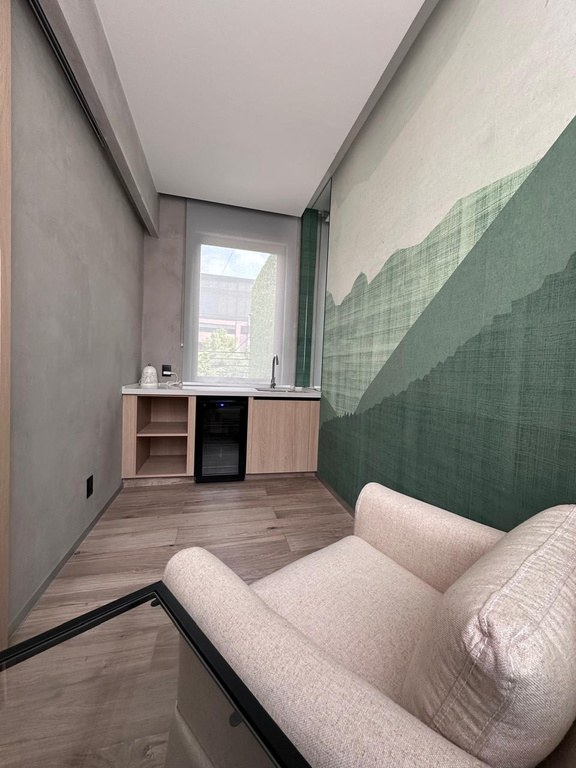

Proyecto
Amsterdam
Antonia GallegosArquitecta



En la colonia Condesa, este proyecto de oficinas propone un lenguaje contemporáneo donde el mobiliario se apoya en estructuras metálicas, contrastadas con elementos suaves que generan un entorno profesional, dinámico y relajado.